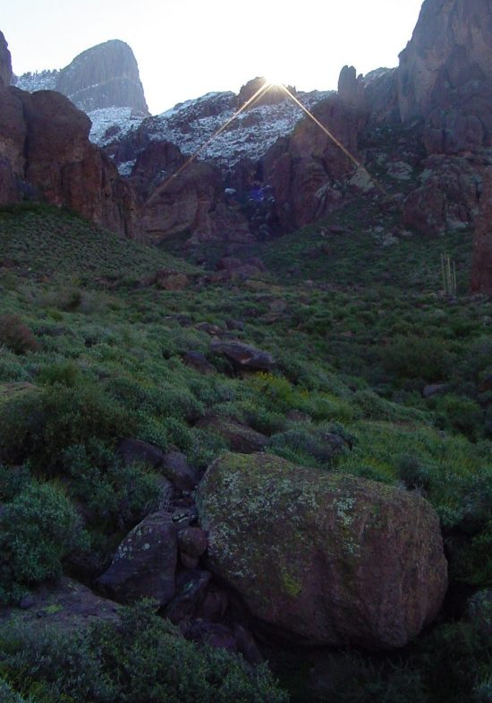
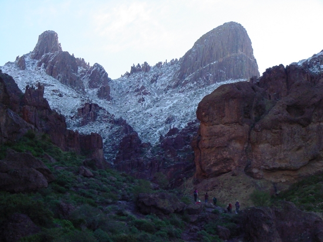
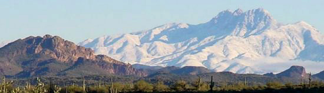
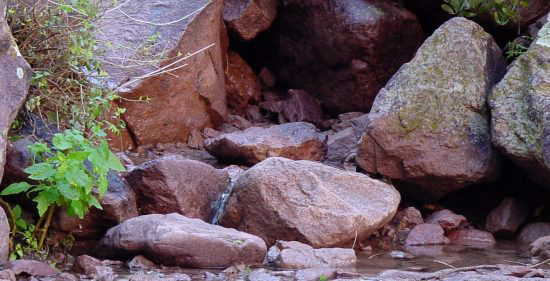
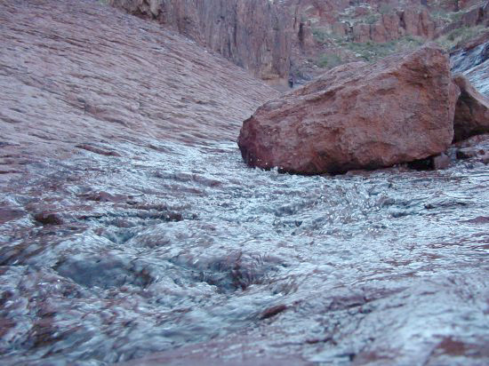
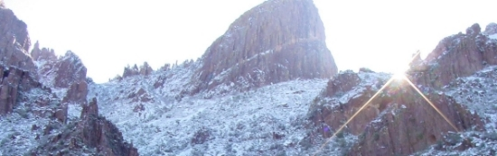
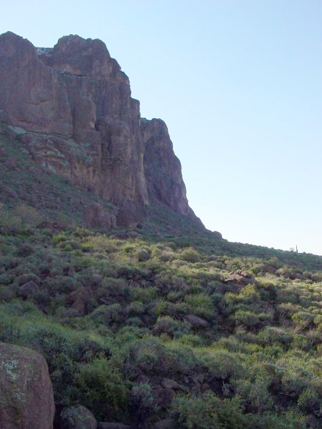

Superstition MountainsThese mountains are just east of Apache Junction in central Arizona. Although rain is common during the winter, snow very rarely falls.. The picture below was taken the morning after a rainstorm, January of 2001. Above 4000 feet this rain came down as snow. The large prometory in the upper left is called Flat-iron because of its resemblance to an iron. The trail to the top of flat-iron runs though Siphon Draw and takes about 3 hours to tranverse. |


|
The Four Peaks as seen from the Superstitions. These peaks usually provide the only view of snow from the Phoenix metro area. Most of this snow will have melted within the day. The Four Peaks are also known for an amethyst mine located high on its western face, which is visible in this picture. |

|
Winter rains cause hundreds of streams and waterfalls to appear in the Superstitions. The water usually only runs about a mile or so, and then disappears into the sands of the surrounding desert. |

|
The first stopping point on the trail to flat-iron is the ampitheater. Here the stream runs swiftly down its bowl shaped bottom. |

|
Here is the view from the "saddle" and the end of my day's hike. The rest of the trail is covered and ice. The 11 o'clock sun is just reaching into Siphon Draw. |

|
I always leave the Superstitions with mixed feelings. The steep grades and sharp rocks always leave me very tired. But beauty of the landscape always draws me back. |

|
The Superstition Mountains are accessible through the Lost Dutchman State Park, just northwest of Apache Junction. (see Arizona State Park's official website ) |